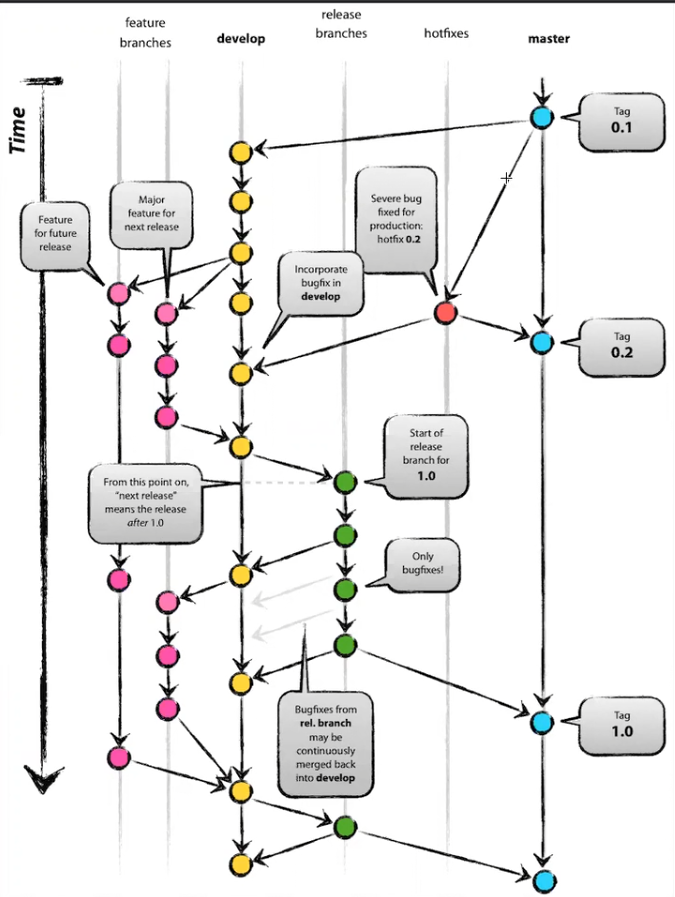

Localmente
Clonar repositorios
git clone (url) ///// Clonamos el repositorio de la url y lo tendremos localmente en nuestra computadora
Comandos comunes
- git init . ///// Inicializa Git en la carpeta actual
- git add (nombreArchivo) ///// Agrega archivos al "stagging area" ( Un area de seleccion de archivos antes de meterlos a la carpeta local git )
Nota: El staggin area es una area de seleccion de archivos, se pueden poner y quitar antes de agregarlas a la carpeta local git
- git commit -m (mensaje) ///// Para agregar los archivos del stagging area a la carpeta local git
- git commit --amend ///// Modificar el nombre de un commit
- git status ///// muestra si existen archivos modificados a los cuales no se les ha aplicado commit
- git diff ///// muestra cambios entre la carpeta actual( working tree ) y la carpeta local git, ademas de cambios entre commits
- git checkout (NombreDelArchivo) ///// Regresar el archivo al estado de la ultima version guardada
- git rm ( nombreDelArchivo ) ///// Para borrar un archivo de git -- Hay que hacer commit y push
- git rm --cached -r (NombreDelArchivo) ///// remover determinado archivo del stagging area
- git rm --cached -r . ///// git reset --mixed ///// git reset ///// limpia el stagging area remover todos los archivos del stagging area
- git tag ///// ver los tags existentes
- git tag -a v1.0 ( Opcional: Nombre del commit ) ///// -a para tag con informacion de quien lo crea, sin -a para no especificarlo, si no se agrega el parametro opcional se agrega el tag al ultimo commit
- git checkout (nombreTag) ///// para cambiar al commit con ese tag
Nota: para enviar el tag al repositorio remoto, se usa --> git push origin ( Nombre del tag ) --> ejemplo: git push origin v1.0
- git clean -n/-i/-f ///// Eliminar los archivos no staggeados que ademas no existen en la carpeta git ( Untracked files )
Nota: El flag -n sirve para ver "que pasaria" si se aplicara el commando
Nota2: El flag -i es el modo "interactivo", por medio de opciones de git te da opciones de filtros para aplicar, en este caso, opciones de que archivos borrar
Regresar a una versión previa
Sin modificar el historial
- git revert (nombreCommit) ///// revierte los cambios que hizo el commit especificado, es decir, se crea un commit nuevo quitando los cambios del commit especificado
- git revert (nombreCommit) (nombreCommit) (nombreCommit)///// deshace varios commits, empezando por el ultimo publicado al mas viejo
- git checkout (nombreCommit) ///// se regresa a una version anterior del programa y si entra en modo detached HEAD, es decir, si se hacen commits aqui, se deshecharan y no se agregaran a git, para trabajar desde
aqui se debe crear una rama nueva desde el commit
- git reset --soft HEAD~(numeroCommitsParaBorrar) ///// Se regresa a una versión anterior del programa borrando el historial. No se borran archivos
- git reset --soft (nombreCommit)) ///// Mueve el HEAD al commit especificado
- git reset --mixed ///// limpia el stagging area
Modificando el historial
- git reset --hard HEAD~(numeroCommitsParaBorrar) ///// Se regresa a una versión anterior del programa borrando el historial y los commits
- git reset --hard (nombreCommit) ///// Se regresa al commit especificado y borra todos los commits y el historial que se hayan hecho despues del commit especificado
- git reset --hard ///// si se pone el comando sin especificar nada delante, se regresa al estado del ultimo commit (HEAD) y Se borran los cambios y archivos que no existan en el ultimo commit HEAD
Nota1: El HEAD es el ultimo commit realizado del branch
Nota2: Tomando como referencia el HEAD se le resta un numero y esos commits se borraran ( incluyendo el HEAD )
Despues de borrar commits y hacer un "git push" aparecera un error de que el repositorio local actual esta varios commits por detras del repositorio remoto, por lo que habria que hacer un "git push -f", con el flag
-f
para forzar cambios
Nota4: Solo hacer reset hard para borrar commits en repositorios locales, en repositorios remotos es muy mal visto
Ramas
- git status ///// checar en que rama estas
- git branch ///// checar las ramas existentes ( marca en que rama estas con * )
- git branch (nombreRama) ///// Crea otra rama
- git branch (nombreRma) (nombreCommit) ///// crea una rama a partir del commit escogido
- git branch -d (nombreRama) ///// borra la rama especificada
- git checkout ( nombreRama ) ///// para cambiar entre ramas
- git checkout -b ( NombreDeLaRamaNueva ) ///// crear la rama y ademas cambia a ella
- git checkout -b ( NombreDeLaRamaNueva ) (NombreDeLaRamaPadre) ///// crear una rama a partir de otra rama y ademas cambia a ella
Fusionar Ramas ( Toda la rama )
- git merge (NombreRama) ///// Se fusiona la rama en la que se esta actualmente con la rama especificada
Nota: Si la rama en la que se esta (main) NO tiene commits extras en comparación de la rama especificada, se realiza por metodo "fast-forward", es decir directamente todos los commits de la rama
especificada se mueven
a la rama main
Nota2: Si la rama en la que se esta (main) SI tiene commits extras en comparación de la rama especificada, se realiza por metodo "recursive", es decir el ultimo commit de la rama especificada se
convierte
en un nuevo
commit de la rama main
- git rebase (NombreRama) ///// Se fusiona la rama en la que se esta actualmente con la rama especificada
Nota: a diferencia de git merge, aqui se modifica el historial para que sea lineal, es decir, todo el historial del commit de la rama se fusiona con el del main.
En git merge la fusion aparece como commit, aqui no.
Nota general: se recomienda utilizar git rebase en el repositorio local y git merge en el repositorio remoto
Fusionar solo partes concretas de una rama ( Cherry picking )
- git cherry-pick (nombreCommit) ///// Agrega UN commit de otra rama a la rama actual
- git cherry-pick (nombreCommit) (nombreCommit2) (nombreCommit3).... ///// Agrega LOS commits especificados de otra rama a la rama actual
- git cherry-pick (nombreCommit)^..(nombreCommit8) ///// Agrega los commits especificados + los commits intermedios entre los dos
- git cherry-pick (nombreCommit)..(nombreCommit8) ///// NO Agrega los commits especificados, solo agrega los commits intermedios entre los dos
Obtener datos del servidor remoto
- git fetch ///// Obtener solo el historial (metadatos) del repositorio remoto para saber si han habido cambios pero sin actualizar nada
- git pulll ///// Actualizar el repositorio local con los cambios que tenga el repositorio remoto
Mostrar historial
- git log ///// Mostrar el historial de rama actual, ademas muestra todas las lineas de mensaje del commit
- git log --branches="*" ///// Mostrar el historial de todas las ramas
- git log --branches="(nombreRama)" ///// Mostrar el historial de la rama especificada
- git log --oneline ///// Mostrar el historial de forma mas corta, el numero del commit solo muestra los primeros digitos, muestra solo una linea de mensaje del commit
- git log --pretty-format: (parametros) ///// Dar formato al historial, checar parametros en documentación oficial de git
Guardar cambios a los que no se les ha hecho commit
- git stash ///// Todos los cambios que se han realizado ( a los que no se les ha hecho commit ) se guardan ( Por default pone el nombre del commit en que se hace )
- git stash save "(NombreStash)" ///// para guardar el stash con determinado nombre
- git stash apply ///// Se vuelve a tener los cambios que se han hecho previamente cuando se aplico git stash, manteniendo todos los commits nuevos que se hayan hecho, no borra el stash de la lista
- git stash apply --(numeroStash) ///// aplicar determinado stash de stash list, no borra el stash de la lista
- git stash list ///// para ver todos los stash guardados
- git stash clear ///// para borrar todos los stash guardados
- git stash pop ///// aplica el ultimo stash de la stash list, borra ese stash de stash list
Errores
- git bisect ///// para checar errores entre commits
- git bisect start ///// para iniciar bisect
- git bisect good ///// ultimo commit funcional
- git bisect bad ///// commit donde dejan de funcionar cosas
Checar quien modifico/agrego lineas en un archivo
git blame (nombreArchivo) ///// muestra el archivo y ademas se muestra quien ha creado/modificado cada linea y en que commit
Modificar comportamiento git
En .git/hooks/ se puede modificar el comportamiento de git al escribir los comandos normales
Por ejemplo: en .git/hooks/pre-commit.sample se modifica lo que se hace antes de relizar el commit
Para activar estos features se debe quitar el .sample del final del archivo
.gitignore
Se ponen los nombres de los archivos que no quieres subir al repositorio local/remoto.
Puedes usar # para poner comentarios.
Ejemplo:
- *.txt ///// significa que todos los archivos con la extensión txt seran ignorados
- credenciales.txt ///// se ignora ese archivo en especifico al hacer commit
Remoto
- git remote add origin (urlRepositorioRemoto) ///// Agrega un repositorio remoto
- git remote add (nombrePlataformaGit) (urlRepositorioRemoto) ///// Agrega un repositorio remoto extra
- git push ///// mandar los commits locales al repositorio remoto ( al origin especificado en .git/config )
- git push (nombrePlataformaGit) ///// mandar los commits locales al repositorio remoto especificado
Nota: (nombrePlataformaGit) se encuentra en .git/config, el cual previamente se agrego con el comando git remote add (nombrePlataformaGit) (urlRepositorioRemoto)
- git push origin (nombreRama) ///// crear rama en el repositorio remoto, ademas de enviar su contenido
Nota: el flag -u es para establecer un repositorio principal, al usar git push -u origin main, el repositorio de github se convierte en el principal, por lo que git push funciona sin especificar a que repositorio va a ir.
Esto solo se hace la primera vez al crear la rama main
Nota2: origin hace referencia a la url en el apartado "origin" de .git/config
Conflictos
Cuando 2 o mas usuarios modifican la misma misma linea de codigo se ocasionan los conflictos, esto puede suceder en:
- Un user1 hace push al repositorio remoto, posteriormente un user2 intenta un push al repositorio remoto habiendo modificado la misma linea de codigo
- Un user hace git pull para obtener los datos y obtiene un warning de que una/varias lineas en su repo local actual tienen conflicto
Estos mensajes de warning aparecen cuando se hace un push o un pull request, podemos saber cual es el fichero que ocasiona el problema con git status.
Para solucionarlo debemos modificar el archivo en cuestión y gracias a git nos apareceran (nombreCommit-user1)>>>>>> y (nombreCommit2-user2)======= dentro del archivo con conflicto, aqui se debe elegir
uno de los dos cambios, posteriormente hacer commit y push
Gitflow

Esta forma de trabajo es comun y se puede implementar con los comandos de git flow o de la forma tradicional con los comandos convencionales git
Para iniciar a utilizarlo:
- git flow init
- git flow feature start (nombreFeature) --- crear y empezar a trabajar en la rama feature
- git flow feature finish (nombreFeature) --- terminar esa rama de feature --- Hace merge a la rama develop
- git flow release start (numeroVersion -- 0.1/1.0/etc) --- crear y empezar a trabajar en la rama release
- git flow release finish (numeroVersion -- 0.1/1.0/etc) --- terminar esa rama de release --- Hace merge a la rama main y en caso de haber bugfixes tambien a la rama develop
- git flow hotfix start (hotfix_numero) --- crear y empezar a trabajar en la rama feature
- git flow hotfix finish (hotfix_numero) --- terminar esa rama de hotfix --- Hace merge a la rama main y develop
Al igual que las ramas normales, al implementar nuevos archivos o commits se usar git add y git commit